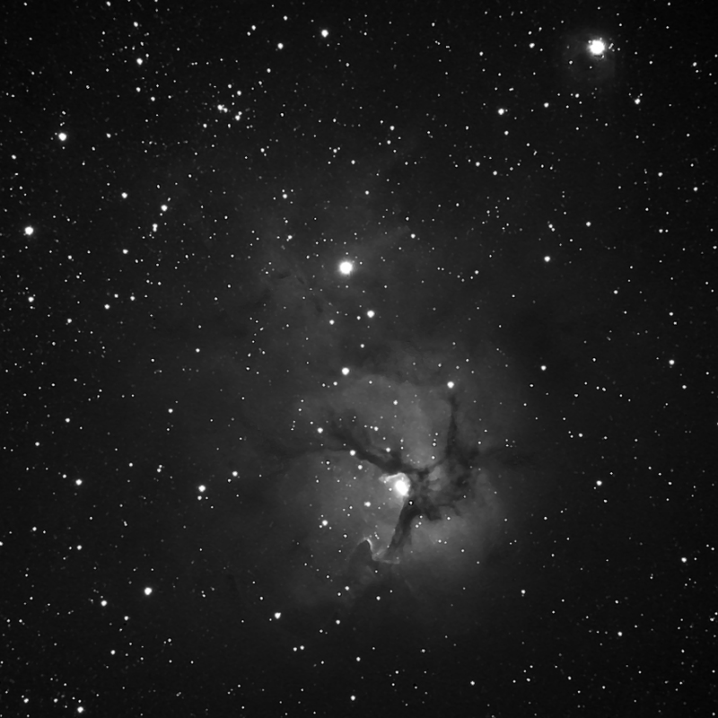

Skip to content
Shenton Park Observatory
Home
Research & Results
Journal archive
Images archive
← Journal archive
M20 - The Triffid Nebula
09 August 2009
· Astrophoto Posts

triffid_lum.jpg
Previous
← 2009 QF31
Next
Jupiter →
×